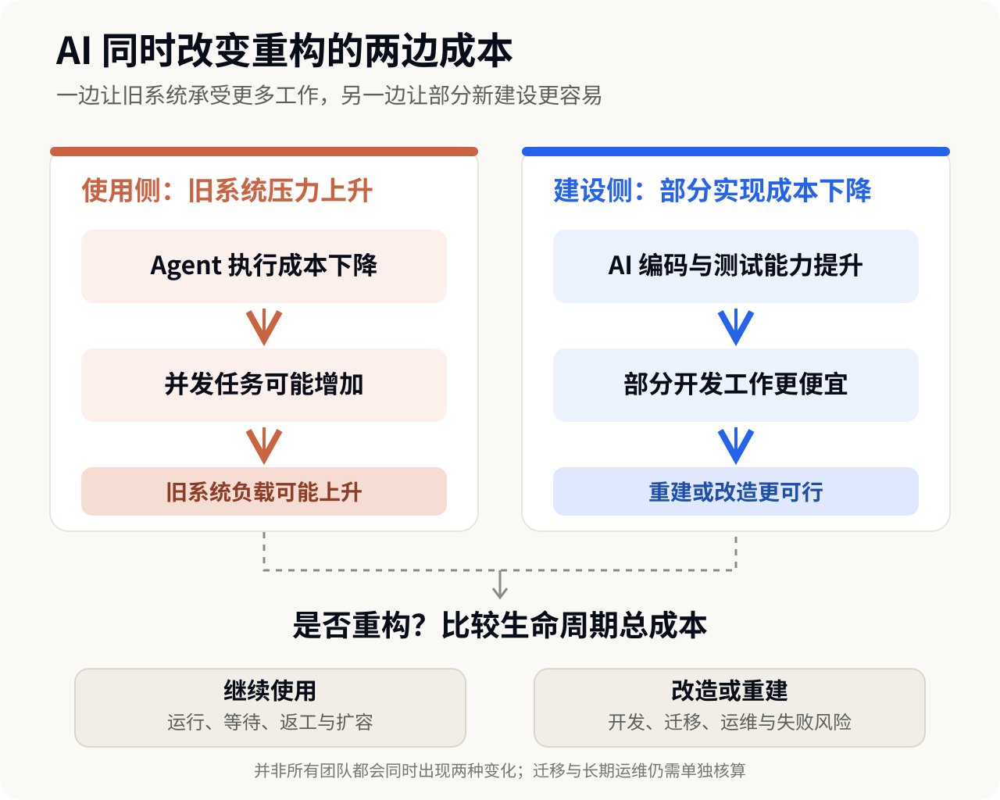

2026 年秋天，几条关于 Git 的工程新闻引起了我的注意。
10 月，Anthropic 宣布完成内部代码仓库向 Scion 的迁移。11 月 2 日，OpenAI 介绍了支撑内部开发的 Pando。11 月 5 日，GitHub 公开了新一代 Git 存储架构 Rubicon。
三家公司都在解决一个问题：当大量 AI Agent 开始同时写代码，原来的版本管理和协作基础设施能否继续支撑这种规模？
但它们没有选择同一条路线。Anthropic 更换了内部版本管理系统；OpenAI 保留 Git 客户端和协议，重新建设底层服务；GitHub 则希望在用户几乎无须改变习惯的情况下升级平台。
最让我感兴趣的，是 Anthropic 与 OpenAI 的分歧。两家公司都是前沿模型企业，都大量使用 Coding Agent，为什么没有得出相同的技术答案？
要解释这个差异，需要先弄清楚 Git 原本为什么这样设计，以及 AI 究竟改变了哪些条件。
一、Git 没有突然过时，变化的是它所处的环境
Git 的成功，很大程度上来自分布式设计。开发者可以把代码仓库复制到本地，独立修改、提交和查询历史，即使暂时离线也能工作。团队需要协作时，再把修改共享和合并。
这套设计长期非常合理。工程师不必依赖随时在线的中央服务器，每个人都能掌握自己的工作历史。
大型代码仓库带来的压力并不是 Agent 首次创造的。Google 在 2016 年介绍 Piper 时，已经讨论过超大规模代码库的协作与工程成本；Meta 的 Sapling 生态则包括 Mononoke 服务端和 EdenFS 虚拟文件系统，后者按需获取文件，而不是一开始就把整个仓库全部放到本地。它们说明，仓库规模、读取效率和团队协作一直是基础设施问题。
这段历史还有一个直接联系：Anthropic 在 Scion 文章的脚注中明确提到，Meta 的 Mononoke 早已探索过 Scion 借鉴的部分技术，尤其是 Bonsai 数据模型。Agent 规模化并不意味着从零发明一套系统，过去为大型人类开发团队积累的工程经验，仍然可以成为新架构的起点。
Git 自身也提供了部分克隆、稀疏检出等方式，减少客户端需要获取的数据。Anthropic 也披露，自己已经尝试过浅克隆、稀疏检出、按需获取对象、内部镜像和仓库快照；高峰期运营过数百个内部 Git 镜像。这些办法一度缓解了压力，但随着合并速度提高，维护成本也变得更高。
Agent 带来的变化，不是第一次出现大型仓库，而是让高并发、短生命周期、持续联网的代码操作变得更加普遍。一个 Agent 可能只处理几项文件修改，却会反复读取代码、创建环境、提交变更并触发测试。多个 Agent 同时工作时，这些操作又会相互叠加。
Anthropic 披露，其内部每天合并的代码变更从 2026 年 5 月的约 2,500 项增长到 9 月的 30,000 多项；持续集成（CI）每天执行约 2,500 万次代码检出。主分支历史接近 100 GB，压缩后的工作副本也超过 25 GB。这些都是 Anthropic 的内部数据，不代表普通团队的负载。Anthropic 也明确表示，对绝大多数仓库而言，Git 仍然是合适的设计，近期并不认为多数组织都会遇到同样的问题。
一种技术过去的优势，在使用条件变化后，也可能成为需要重新权衡的成本。
这给了我一个观察成熟软件的新角度。看到某种旧技术受到 AI 冲击，首先应该问的不是“新工具能否取代它”，而是“它当初为什么这样设计，支撑这个选择的条件现在是否还成立”。
这与我在《AI 正在把“使用软件”和“操作软件”拆开》中讨论的变化相连：当 Agent 接管原本由人完成的操作，变化的不只是交互界面，还包括软件与执行者之间的分工。本篇继续往下一层看，当执行者改变后，支撑代码生产的基础设施是否也需要调整。
二、AI 不仅增加旧系统的压力，也可能降低重建系统的部分成本
如果只把 AI 编程理解为“写代码更快”，我们会漏掉它对技术演进的另一面影响。
过去，企业即使发现某套基础设施越来越不合适，也未必会选择重做。重新建设意味着投入工程师，处理复杂的边界情况，迁移已有工具，还要确保新系统不会破坏正在进行的业务。旧系统虽然不完美，继续维护却可能仍然更划算。
Agent 的出现可能同时改变两边的成本。下面这张图展示的是一种可能的机制，不是所有团队都会经历的固定过程。

前一条路径会抬高继续沿用旧系统的成本；后一条路径则可能降低改造的初始投入。两者同时发生，才构成重估旧系统的窗口。但架构设计、跨系统集成、数据迁移、长期运维和失败风险，不会因为代码生成变便宜而自动消失。
Scion 的建设提供了一个具体例子。Anthropic 官方披露，一个七人团队在五个月内建设并迁移了 Scion，同时交付代码审查工具 Antique、代码搜索、源代码管理权限系统等配套能力。Claude 帮助团队更快实现和测试系统，但工程师仍然负责理解各系统之间的关系、确定架构边界和权衡设计取舍。Anthropic 甚至提到，工程师的一项重要工作经常是对 Agent 说“不”，防止它为了完成局部任务而破坏系统约束。
Anthropic 自报，Scion 将代码检出从分钟级降到秒级，CI 单项释放了约 25% 的计算资源。这些是厂商内部结果，不是独立横评，也不能直接外推到其他团队。它们说明的是：在特定负载下，AI 参与建设新系统后，重构的部分实现成本和运行收益都可能发生变化。
一项技术是否值得替换，不只取决于旧方案的成本上升了多少，也取决于新方案的建设成本下降了多少。
这也能帮助我们重新理解 AI 编程 对企业自建软件的影响。过去因为研发成本太高而必须采购的内部工具，现在可能出现更可信的自建选择。但初始开发便宜，不等于后续维护、兼容、数据迁移和责任承担也同样便宜。
我此前在《当 AI 能替你造软件，哪些服务仍值得买？》中讨论过 AI 如何改变软件的买建经济性。本篇把同一问题延伸到基础设施：AI 既可能提高旧系统的持续运行成本，也可能降低重建它的部分成本。
三、同样是模型公司，为什么 Anthropic 和 OpenAI 选择不同路线？
如果只用“Agent 数量增加”解释 Scion 和 Pando，就很难回答一个问题：为什么 Anthropic 愿意改变版本管理系统本身，OpenAI 却认为保留 Git 仍然值得？
两家公司同属前沿模型公司，业务方向相近，并不意味着内部工程环境也相同。版本管理选型并不由模型架构直接决定，而是由客户端怎样工作、团队依赖哪些工具、是否需要离线能力、能否改变现有工作流，以及组织愿意承担多少迁移成本共同决定。公开资料没有披露两家公司完整的内部选型讨论，因此能比较的是它们明确公开的工作负载和设计取舍，不能推断哪家 Agent 更多或哪套方案绝对更先进。
两家公司公开披露的负载并不完全一致，但它们面对的基本挑战相似：大量任务并发操作同一套大型代码库，代码更新之后又触发更多读取、测试和同步工作。
它们的解决思路也有共性：减少无关操作之间的等待，让重复读取代码的成本更低，避免每个临时任务都承担一套昂贵的仓库维护工作。
真正的分歧在于：为了获得这些效率改善，企业愿意改变原有系统的哪一部分？
| 比较维度 | Anthropic：Scion | OpenAI：Pando | GitHub：Rubicon |
|---|---|---|---|
| 改造对象 | 内部版本管理体系 | Git 服务端 | 平台存储与服务架构 |
| 保留的既有能力 | 代码历史与协作；客户端按需取数 | Git 协议、客户端和工作流 | Git 操作方式与既有保护机制 |
| 主要取舍 | 客户端依赖在线服务，配套工具一并重建 | 不同分支可并行更新，但跨分支读取可能对应不同时间点 | 大量代码内容可并行写入，只在更新分支指向时协调 |
| 当前状态 | 已完成内部迁移 | 已投入内部生产 | 有限私有预览，计划于 2027 年初扩大开放范围 |
依据三家官方工程说明整理。表格比较的是改造选择，不是性能排名；各家的负载和统计口径不同。GitHub Rubicon 截至 2026 年 11 月 5 日仍处于有限私有预览。
Anthropic 的选择，首先来自它对客户端工作方式的判断。官方说明称，其内部几乎所有代码仓库客户端都是持续联网的 Agent 和自动化任务。Anthropic 并不是认为 Git 的分布式设计本身错误，而是发现自己的客户端已经很少需要完整离线仓库。对它而言，继续让每个临时任务准备和维护完整仓库，带来的成本已经超过了这项能力的价值。
Scion 因此采用更偏服务端的方式：服务器承担历史查询、创建提交、合并等操作，客户端只保留有限的本地缓存和工作文件，需要什么再从服务端获取什么。它不以兼容通用 Git 客户端为目标，Anthropic 也同步建设了代码审查、搜索、权限和其他配套工具。Anthropic 同时强调，Git 对绝大多数仓库仍然是合适的设计；Scion 是针对其特殊工作负载作出的内部选择，不是面向行业的通用替代方案。它还明确表示，这种方案只适合极其庞大的单一代码仓库、数万名工程师或大量 Agent 并发写代码的环境；Anthropic 能为内部 Agent 使用投入的模型资源，也远高于普通企业通常愿意承担的水平。
OpenAI 的选择不同。它在 Pando 的官方说明中明确表示，希望在不打断现有开发、不改变团队使用 Git 方式的前提下，解决高并发推送和大量代码读取带来的问题。OpenAI 还希望把在 Git 兼容路径上做出的改进贡献回 Git 项目，让已有客户端和开发习惯继续发挥价值。
因此，Pando 重建的是 Git 服务端，而不是开发者使用的整个工作方式。不同分支的更新可以相对独立地进行，服务器也能复用已经准备好的代码数据，避免为每个读取请求重复处理相同历史。
这也有代价。同一分支上的更新仍保持必要的先后关系，写入后也能读到自己的修改；但一次读取多个分支时，它们不一定反映整个仓库在同一时刻的状态。OpenAI 接受这项取舍，以换取不同分支更高的并发能力。官方披露，Pando 已经支撑 OpenAI 内部大型代码仓库的全部开发，生产环境中的推送延迟中位数降低约 80%，约为原来的五分之一。这是公司内部相对原有系统的结果，不适合拿来与 Scion 直接比较。
代码工作流还不只有版本存储。11 月 4 日，OpenAI 在官方公告中宣布拟收购 Pierre Computer Company。公告说明，Codex 已经使用 Pierre 的 Trees 和 Diffs 组件浏览文件、查看变更；Code Storage 则是收购交割后计划进一步整合的能力。公告发布时交易尚未完成，仍需满足惯常交割条件，包括监管批准。因此，这只能证明代码浏览与差异审查组件已经采用，Code Storage 的整合仍属于交割后的计划，不能写成收购完成或存储能力已全面进入 Codex。它也提醒我们，Agent 时代的代码基础设施不只是一套 Git 后端，还包括开发者和 Agent 如何理解、审查与追踪变更。
GitHub 的情况又不同。它要服务的是大量不同规模、不同工具链的开发者和企业，而不是只优化一家公司的内部 大型单一代码仓库。因此，Rubicon 在保留 Git 操作方式和既有保护机制的同时，把代码内容的存储、请求处理和后台维护拆开，让它们能够分别扩展。GitHub 的解释是，代码对象本身不可变，可以由不同写入者并行保存；真正需要协调的是分支指向的更新。该架构当时处于有限私有预览，GitHub 计划在 2027 年初扩大 开放范围，不能把内部压力测试结果写成全面上线后的生产表现。
相似的技术能力和需求，不会自动导向相同的最优方案；已有系统、兼容性要求、风险承受能力和迁移成本，都可能改变合理的选择。
这对 AI Builder 有一个直接启发：观察领先企业采用某种 AI 原生架构，不应马上问自己如何复制，而要先弄清它为了什么负载而设计、放弃了什么、保留了什么。否则，可能只是把别人的特殊约束变成自己的额外复杂性。
四、减少协调成本，不等于所有工作都可以不再等待
前面几家公司有一个共同方向：让彼此无关的操作尽可能独立完成。
但什么样的等待可以删除，什么样的协调本来就是为了保证结果正确？
设想两个 Agent 同时开发一套业务系统。Agent A 把接口返回的金额单位从“元”改成“分”，Agent B 仍然按照旧单位开发下游计算。两者修改不同文件，各自通过局部测试，合并时也未必出现文本冲突。但放在一起运行，金额就可能计算错误。
版本管理能够记录变更怎样发生，却不能仅凭修改成功合并，就证明业务行为正确。合并只说明修改进入了共享代码；测试通过只说明它在给定测试范围内没有暴露问题；部署后是否解决真实需求，还需要业务验收。
这也是为什么代码更新加速以后，系统仍然需要知道：哪些修改已经接受了什么检查，哪些变更必须一起验证，以及测试结果是否仍然适用于准备交付的版本。
GitHub 的合并队列（Merge Queue）早已提供了一种解决办法：把待合并修改与目标分支及队列中的相关修改组合起来，再执行必要检查。这类集成问题并不是 Agent 时代才出现的。
更广泛的开发数据也显示，代码生产和软件交付之间存在明显差距。Mert Demirer、Leon Musolff 和 Liyuan Yang 的 NBER Working Paper 35275基于超过 50 万名 GitHub 开发者及 AI 使用数据。研究估计，自主编码 Agent 的采用与代码提交活动累计增加约 240% 相关，但项目数量增加约 80%，实际发布数量增加约 30%。这是一项匹配事件研究，并非随机实验；采用行为也不是随机分配，不能把这些数字当成普遍因果效应。它的价值在于揭示，从写代码到发布软件，产出增幅会逐层衰减。该文是尚未同行评审的工作论文；作者披露其中一位作者曾在微软任博士后，现担任付费研究顾问。
真正的新变化，是验证也开始被大量自动化，而且需要控制它的成本。
Stripe 的 Minions提供了一个实际例子。Stripe 官方披露，其内部每周有超过一千个完全由 Agent 编写的代码合并请求（PR）被合并，但这些 PR 仍然经过人工审查。Minions 会先运行快速的本地检查，再根据需要执行相关测试；部分失败可以自动修复，其他问题交回 Agent 处理。为了控制计算、模型调用和等待成本，完整 CI 最多运行两轮。Stripe 认为，反复执行完整测试的边际收益会逐渐下降。
这个做法并不是让人重新承担全部工作，而是把自动检查放在适合的位置，同时明确什么时候继续修复、什么时候停止。
当执行方式改变，必须重新决定哪些事情可以并行、哪些状态需要统一、哪些结果必须经过验证。
例如，一套企业审核产品可以让 Agent 自动生成规则、执行检查甚至修正问题，但仍然需要明确规则版本、适用范围和正式生效状态。人工参与可以减少，操作界面可以改变，但正式结果所依赖的事实与责任不能因此变得含糊。
五、从 Git 回到现实：怎样判断一个系统需要重构到什么程度？
现在回到最初的问题：Git 还够用吗？
对于拥有特殊代码规模和高频 Agent 负载的组织，重建版本管理系统可能有足够的收益。对普通软件团队，如果现有 Git 工作流没有明显影响交付，分支、自动测试与现有协作机制已经能够稳定完成工作，那么迁移到一套专门为极端并发设计的新系统，未必值得。
判断改造范围，可以先看当前系统究竟哪里出了问题。
| 当前系统状况 | 更合适的改造方向 |
|---|---|
| 核心业务和数据机制仍然适用，只是人工操作较多 | 保留核心，增加 Agent 自动化 |
| 核心系统可靠，但跨系统协作、数据传递和等待成本较高 | 局部改造接口与协作机制 |
| 核心数据、状态或规则机制已无法承接新负载，长期修补成本更高 | 评估整体重构 |
这是本文归纳的三种改造范围，不是所有企业都必须经历的三个阶段，也不意味着三种方式完全互斥。
假设一家企业正在考虑重新建设内部审核流程。原来的方式由员工上传材料、配置规则、执行检查，再由系统生成结果。现在引入 Agent 后，材料整理、规则建议和部分审核都能够自动完成。
如果当前系统已经提供稳定的规则记录、审核结果和权限管理，只是人工操作较多，那么增加 Agent 入口和自动化能力，也许就足够了。
如果 Agent 经常需要跨多个系统读取材料、等待重复授权或重新准备相同的上下文，那么真正需要调整的可能是系统之间的接口与协作方式，而不是整个审核系统。
只有当原有系统的数据结构、规则生效机制或任务组织方式已经无法承受新的工作负载，且局部改造长期成本更高时，才有理由考虑更彻底的重构。
这三种选择都可能合理。决定因素不是哪一种更像 AI 原生产品，而是哪一种能在满足业务约束的情况下，以更合适的成本持续交付有效结果。
同样，判断一次基础设施改造是否成功，也不应只看某个技术指标。写入和读取性能值得关注，但还需要考虑迁移风险、测试与运维成本，以及这些改善最终能否缩短可靠交付的周期。Agent 可以帮助更快写出一套新系统，却不能仅凭开发时间缩短就推断它更容易维护、更适合迁移，或者长期拥有成本更低。
对 AI Builder 来说，技术选型需要同时回答两个问题：现有系统哪里已经不适合当前任务，以及新方案是否真的比保留和改进现有系统更合算。
Git 的答案不是“被替代”或“保持不变”。对大多数团队，现有 Git 工作流仍然够用；对极端并发的内部代码平台，服务端架构和协作机制可能需要重新设计。
这类变化也不只发生在代码管理领域。当 AI 降低部分执行和实现成本，成熟系统的设计前提可能开始松动，重建也可能变得更可行。但旧技术是否值得被替换，仍然取决于真实负载、必要约束，以及新旧方案的生命周期成本。
AI 扩大了企业可选的技术方案，却不会替企业决定哪一种方案值得选择。
下一次看到某种成熟软件正在被 AI 重新设计，我更想了解的，不只是它用了什么最新技术，而是它为什么原来那样设计、现在为什么需要改变，以及这次改变究竟让整个系统变好了多少。
参考资料
厂商一手工程文档
- Anthropic — Redesigning source control at Anthropic（2026-10-13，10 月 15 日更新）
- OpenAI — Scaling Git at OpenAI（2026-11-02）
- GitHub — Inside GitHub's new Git storage architecture（2026-11-05）
- OpenAI — OpenAI to acquire Pierre Computer Company, Inc.（2026-11-04）
- Stripe — Minions: Stripe’s one-shot, end-to-end coding agents（2026-02-09）
- GitHub Docs — Managing a merge queue
- Git — Partial clone
- Git — Sparse checkout
工程历史与既有系统
- Potvin & Levenberg — Why Google Stores Billions of Lines of Code in a Single Repository（2016）
- Meta Engineering — Sapling: Source control that's user-friendly and scalable（2022-11-15）
- Meta Sapling — Mononoke documentation